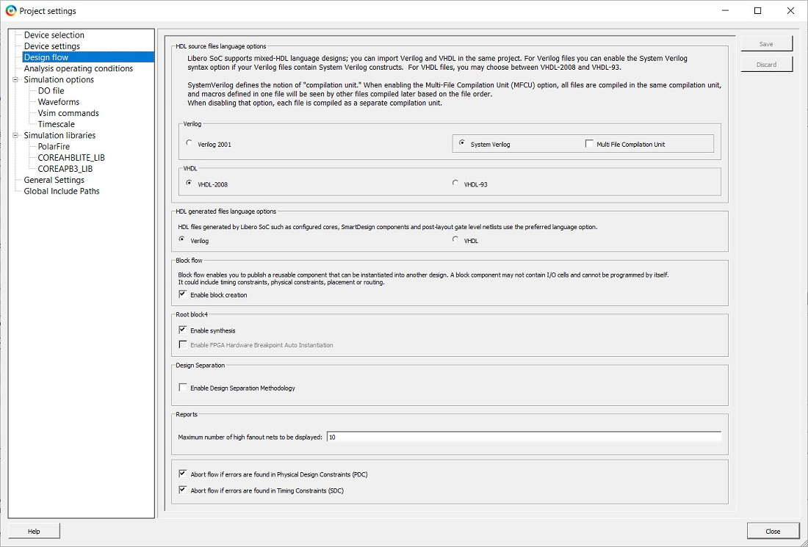
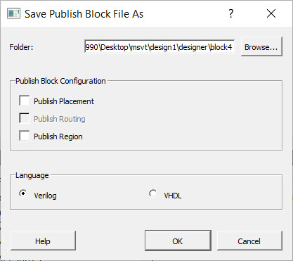
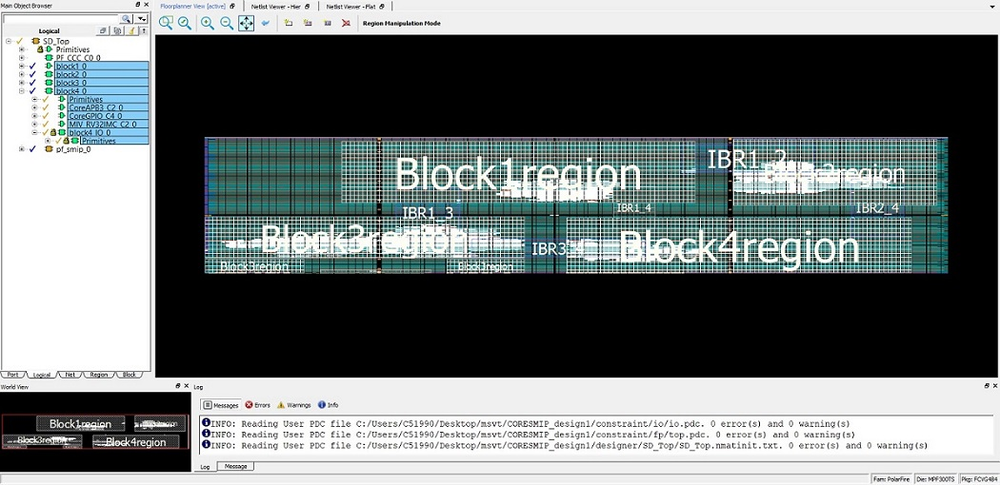
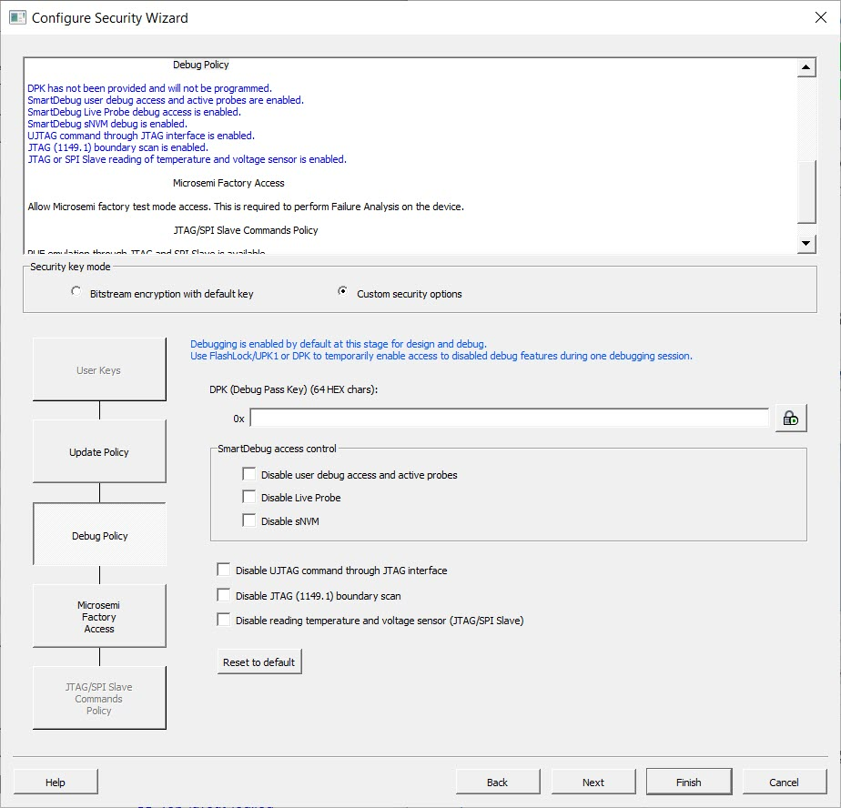

Note: To understand the design flow and floorplanning
terminology in the following topics, see the Libero SoC Design Flow and Chip Planner
help topics in Libero.
The first step when implementing a complete system using Microchip Design Separation methodology is to achieve logical separation of various subsystems. Create logically separate HDL modules corresponding to the system.
This example defines the following
subsystems:
block1.v
block2.v
block3.v
block4.v
pf_smip.v
PF_CCC_C0.v
These subsystems are independent of each other. They communicate with each
other using the interconnect signals. To begin with creating the HDL subsystem,
follow these steps:
After you identify the subsystems to be implemented using design separation, import these modules into a Libero project.
Create a new Libero project for the FPGA device chosen for the design. In this
example, the design using a MPF300TS, 484 FCVG device is implemented. Import the
HDL files using File > Import > HDL Source file
menu into the Libero Project.
The next step is to create a Block for each subsystem of this design.
Select a module to be the root module. For example, select block4 as shown in the following figure.
Figure 16-13. Selecting a Module as the Root of a Block
Use Project > Project Settings > Design Flow > Enable Block Creation to enable Block flow for this module, as shown in the following figure.
Figure 16-14. Project Settings for Block Creation
The Publish Block option is enabled in the design flow, as shown in the following figure.Figure 16-15. Publish Block Option Enabled in the Design
If a Block requires physical I/O resources, specify explicit instantiation of I/O resources. All logic within the Microchip Design Separation methodology must be incorporated within an isolated region. Therefore, you must associate all physical I/O resources with an isolated region. You can insert I/Os through direct instantiation or through insertion of I/O buffers using SmartDesign.
This example uses the Catalog in SmartDesign to insert I/Os to top-level signals. block4 subsystem has following port list:
Because each Block should have I/Os inserted for its top-level I/O signals, insert I/O ports to the top-level signals of this subsystem.
Create a SmartDesign with the name block4. Instantiate the COREAPB3, COREGPIO, and MIV_RV32IMC components into block4.
For each top-level output signal, assign an OUTBUF macro. This instantiates a single I/O port for each of the signals. The output signal DataOut has a width of 32 bits.
Figure 16-16. Macros in the Catalog Window.
After you instantiate all required I/O macros, rename them to a unique name and connect these I/O pads to respective ports of block4 instance.
Since DataOut, TX, Y, and Y_0 are interconnected signals, right-click the ports and promote them to the top.
The following figure shows the schematics of the block4 SmartDesign component.
Figure 16-17. SmartDesign Component for block4 Subsystem along with I/Os
Generate block4, set this module as the root module, and enable Block creation for this module as described in the previous section.
After you create the module with I/Os inserted, publish the Block. Run Synthesis, and compile the subsystem (or its wrapper SmartDeisgnor HDL component). You can check for timing closure on the Block. Publish the Block without place-and-route information.
For block4, run Synthesis.
Disable Publish Placement and Publish Routing information in Publish Block > Configure Options, as shown in the following figure. Publish the block.
Note: Placement and routing information is not needed until the Block is integrated with the top-level project. Enabling these options results in a longer Compile cycle.
Figure 16-18. Publishing the Block without Placement and Routing Information
The following figure shows the state of the completed design flow after you publish the Block.Figure 16-19. Completed Block Flow along with Resource Usage from Compile
Publishing a Block creates a <block_name>.cxz file in the <project_path>/designer/<block_name>/export directory.
For the preceding subsystem, Libero creates the block4.cxz file in the export directory under the designer directory of the Project location, as shown in the following figure.
Figure 16-20. Published Block as .cxz file in Export Directory
Repeat this procedure for the other four subsystems, and then publish Blocks for each of them. Use the Block names shown in the following table.
After you published the subsystem Blocks, create a new Libero project for the top-level design. Create a SmartDesign block where you instantiate all the individual blocks and connect their IRS signals. This example writes a top-level module SD_Top.v that instantiates these Blocks along with required interconnects. The following shows an example description of the top-level SD_Top module.
Set the top-level module as the root module, and import all Blocks (<block_name>.cxz files) using File > Import > Blocks in Libero. The following figure shows Design Hierarchy of the top-level SD_Top module with all Blocks instantiated.
Figure 16-21. Top-level Design Hierarchy
For this module, uncheck the boxes for Enable block creation and Enable synthesis (in Project Settings) and check Enable Design Separation Methodology, as shown in the following figure.
Figure 16-22. Project Settings for the Top-level Design
Assign each Block of the design to a separation region.
16.2.5 Floorplanning Design with Separation Regions
Each Block of the design must be assigned to a separation region. You can define separation regions in Chip Planner or use a PDC file. For more information about floorplanning a design using Chip Planner, see the Libero online help.
This example defines a separation region using Chip Planner for instance block4_0, which corresponds to the block4 Block.
Open Chip Planner from Manage Constraints > Floor Planner > Edit in the Design Flow window, as shown in the following figure.
Figure 16-23. Opening Chip Planner
Create a separation region for each Block according to the estimate obtained from the resource usage reports.
16.1.7 FloorPlanning with Design Separation Regions
shows a sample floorplan for the design. This
example creates an exclusive routing region
constraint for instance block4_0, as shown in the
following figure. You can define the region type
to be inclusive if a top-level global instance
needs to be placed within the same region.Figure 16-24. Creating an Exclusive Routing Region
Create separation regions for all blocks of the design. Then assign Block instances to the respective separation region. For this example, the floorplan resembles the following figure.
Figure 16-25. Floorplan of Design with Separation Regions Defined
After you create separation regions corresponding to the Blocks, create IRS regions for each set of connections between the Blocks. In the example, block1_0 connects to IBR1_2 and IBR1_2 connects to block2_0. Consequently, define the remaining three sets of IRS regions.
IRS region is an inclusive routing region that is created in a similar way as the separation regions. The following figure show an example of an IRS region for instances block1_0 to IBR1_2.Figure 16-26. Creating an IRS Region Between Two Blocks
Assign valid IRS net macros to the respective IRS regions.
A complete floorplan of the example design resembles the following figure. Figure 16-27. Complete Floorplan of DesignThe separation between each region should be at least equal to the required number of clusters to satisfy the separation criteria.
The following shows a sample PDC file that can be used to implement the preceding floorplan.
The regions are defined with -route true
to constrain routing. Separation regions
are assigned by their highest level hierarchy name
using the assign_region command.
IRS nets are assigned with wildcards using the
assign_net_macros
command.
After you complete place-and-route, extract the design information to execute MSVT.
Navigate to Configure Security > Configure Options > Debug Policy and configure the security and programming options per system requirements, as shown in the following figure.
Figure 16-28. Security Settings Before Programming
Export the programming file from Program Design > Export FlashPro Express Job.
A programming file and files required for the MSVT are generated. Libero exports these files into the <project_path>/designer/SD_Top/SD_Top.msvt.dtf directory and creates a parameter file in the <project_path>/designer/SD_Top/msvt.param file, as shown in the following figure. The msvt.param file contains a list of parameters that you can adjust before executing MSVT.Figure 16-29. Generated MSVT Files
Modify the REQUIRED_SEPARATION parameter according to your system requirements before executing MSVT.
This command prints an exhaustive report to msvt_check_pf.log file given with the –o argument or to stdout if –o is omitted. The argument –p is required, along with the path to the msvt.param file generated from Libero.
When this command completes successfully, the message MSVT Check failed appears
if the design failed to meet one or more separation criteria and the message MSVT
Check succeeded appears if the design met all separation criteria.
Because Microchip Design Separation methodology guidlines are followed in the example, the following output shows the conclusion of MSVT output indicating that the design was verified for the given separation criteria.
MSVT Check
Design: SD_Top.msvt Started: Fri Jan 8 16:50:41 2021
Checking IRS connectivity against parameter file
===================================================
The following instances do not belong to any routing region:
====================================================================
PF_CCC_C0_0/PF_CCC_C0_0/pll_inst_0
REF_CLK_0_ibuf/U_IOIN
The following IRS nets are not constrained by any routing region:
====================================================================
block4_0_TX
block1_0_TX
Analyzing floorplan ...
========================
block4_0 and block2_0 : Minimal floorplan separation = 9 clusters.
block4_0 at cluster (144,62)
block2_0 at cluster (144,52)
block4_0 and block2_0 : Minimal placement separation = 21 clusters.
(2148,156) containing cell block4_0/BUFD_1/U0
(2148,225) containing cell block2_0/BUFD_0/U0
block4_0 and block3_0 : Minimal floorplan separation = 11 clusters.
block4_0 at cluster (99,27)
block3_0 at cluster (87,27)
block4_0 and block3_0 : Minimal placement separation = 11 clusters.
(1211,82) containing cell block4_0/CoreGPIO_C4_0/CoreGPIO_C4_0/inData_s2[6]
(1057,81) containing cell block3_0/APB_dp_fp_1/U0/i_post_norm_mul/s_shl2_RNIS34841[4]
block4_0 and block1_0 : Minimal floorplan separation = 11 clusters.
block4_0 at cluster (99,64)
block1_0 at cluster (99,52)
block4_0 and block1_0 : Minimal placement separation = 13 clusters.
(1368,156) containing cell block4_0/BUFD_0/U0
(1368,201) containing cell block1_0/BUFD_0/U0
block4_0 and pf_smip_0 : Minimal floorplan separation = 37 clusters.
block4_0 at cluster (99,0)
pf_smip_0 at cluster (61,0)
block4_0 and pf_smip_0 : Minimal placement separation = 38 clusters.
(1219,2) containing cell block4_0/block4_IO_0/OUTBUF_31/U_IOTRI
(746,2) containing cell pf_smip_0/PF_IO_C1_0/PF_IO_C1_0/I_IOD_0
block4_0 and 'others' : Minimal floorplan separation = overlapping.
block4_0 at cluster (99,0)
'others' at cluster (99,0)
block4_0 and 'others' : Minimal placement separation = 0 clusters.
(1219,2) containing cell block4_0/block4_IO_0/OUTBUF_31/U_IOTRI
(1202,2) containing cell RESETN_ibuf/U_IOIN
block2_0 and block3_0 : Minimal floorplan separation = diagonal.
block2_0 and block3_0 : Minimal placement separation = diagonal.
block2_0 and block1_0 : Minimal floorplan separation = 9 clusters.
block2_0 at cluster (144,93)
block1_0 at cluster (134,93)
block2_0 and block1_0 : Minimal placement separation = 9 clusters.
(1743,282) containing cell block2_0/BUFD_53/U0
(1620,282) containing cell block1_0/BUFD_87/U0
block2_0 and pf_smip_0 : Minimal floorplan separation = diagonal.
block2_0 and pf_smip_0 : Minimal placement separation = diagonal.
block2_0 and 'others' : Minimal floorplan separation = 9 clusters.
block2_0 at cluster (144,62)
'others' at cluster (144,52)
block2_0 and 'others' : Minimal placement separation = diagonal.
block3_0 and block1_0 : Minimal floorplan separation = 10 clusters.
block3_0 at cluster (38,64)
block1_0 at cluster (38,53)
block3_0 and block1_0 : Minimal placement separation = 22 clusters.
(842,124) containing cell block3_0/CoreGPIO_C2_0/CoreGPIO_C2_0/dataOut[7]
(842,196) containing cell block1_0/CoreGPIO_C0_0/CoreGPIO_C0_0/inData_s1[7]
block3_0 and pf_smip_0 : Minimal floorplan separation = 4 clusters.
block3_0 at cluster (66,0)
pf_smip_0 at cluster (61,0)
block3_0 and pf_smip_0 : Minimal placement separation = 4 clusters.
(811,2) containing cell block3_0/Block3_IO_0/INBUF_17/U_IOIN
(746,2) containing cell pf_smip_0/PF_IO_C1_0/PF_IO_C1_0/I_IOD_0
block3_0 and 'others' : Minimal floorplan separation = 11 clusters.
block3_0 at cluster (99,0)
'others' at cluster (87,0)
block3_0 and 'others' : Minimal placement separation = 15 clusters.
(1010,2) containing cell block3_0/Block3_IO_0/INBUF_19/U_IOIN
(1202,2) containing cell RESETN_ibuf/U_IOIN
block1_0 and pf_smip_0 : Minimal floorplan separation = 60 clusters.
block1_0 at cluster (38,64)
pf_smip_0 at cluster (38,3)
block1_0 and pf_smip_0 : Minimal placement separation = diagonal.
block1_0 and 'others' : Minimal floorplan separation = 11 clusters.
block1_0 at cluster (99,64)
'others' at cluster (99,52)
block1_0 and 'others' : Minimal placement separation = 66 clusters.
(1204,204) containing cell block1_0/MIV_RV32IMC_C0_0/MIV_RV32IMC_C0_0/u_opsrv_0/u_core_0/u_lsu_0/un1_lsu_expipe_req_op_2
(1202,2) containing cell RESETN_ibuf/U_IOIN
pf_smip_0 and 'others' : Minimal floorplan separation = 37 clusters.
pf_smip_0 at cluster (61,0)
'others' at cluster (99,0)
pf_smip_0 and 'others' : Minimal placement separation = 37 clusters.
(746,2) containing cell pf_smip_0/PF_IO_C1_0/PF_IO_C1_0/I_IOD_0
(1202,2) containing cell RESETN_ibuf/U_IOIN
Checking internal nets for block block4_0 ...
====================================================================
Checking IRS nets for block block4_0 ...
====================================================================
Propagating IRS nets outgoing from block4_0 to block2_0
====================================================================
Propagating IRS nets outgoing from block4_0 to block1_0
====================================================================
Checking internal nets for block block2_0 ...
====================================================================
Checking IRS nets for block block2_0 ...
====================================================================
Propagating IRS nets outgoing from block2_0 to block1_0
====================================================================
Checking internal nets for block block3_0 ...
====================================================================
Checking IRS nets for block block3_0 ...
====================================================================
Propagating IRS nets outgoing from block3_0 to block4_0
====================================================================
Propagating IRS nets outgoing from block3_0 to block1_0
====================================================================
Checking internal nets for block block1_0 ...
====================================================================
Checking IRS nets for block block1_0 ...
====================================================================
Propagating IRS nets outgoing from block1_0 to block4_0
====================================================================
Propagating IRS nets outgoing from block1_0 to block2_0
====================================================================
Propagating IRS nets outgoing from block1_0 to block3_0
====================================================================
Checking internal nets for block pf_smip_0 ...
====================================================================
Checking IRS nets for block pf_smip_0 ...
====================================================================
Design has met 2 switches separation requirement
MSVT Check succeeded.
Number of errors: 0


 The following shows a sample PDC file that can be used to implement the preceding floorplan. The regions are defined with
The following shows a sample PDC file that can be used to implement the preceding floorplan. The regions are defined with